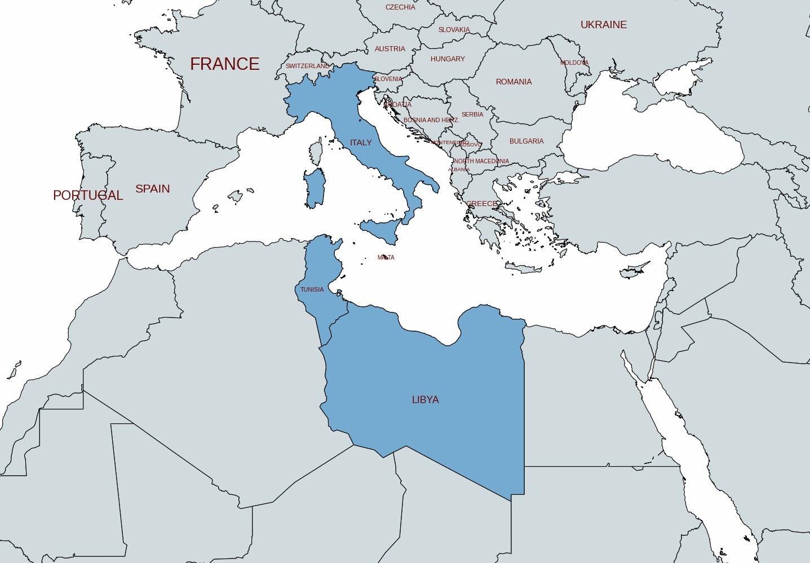
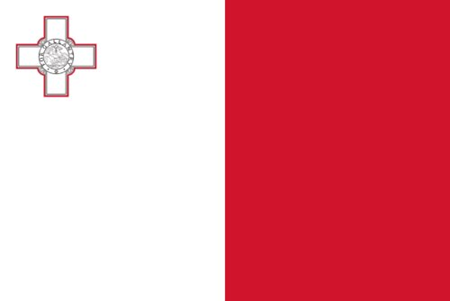
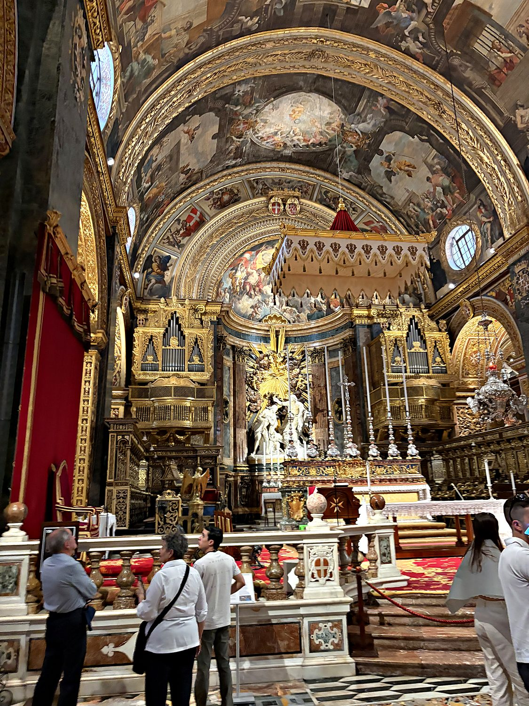
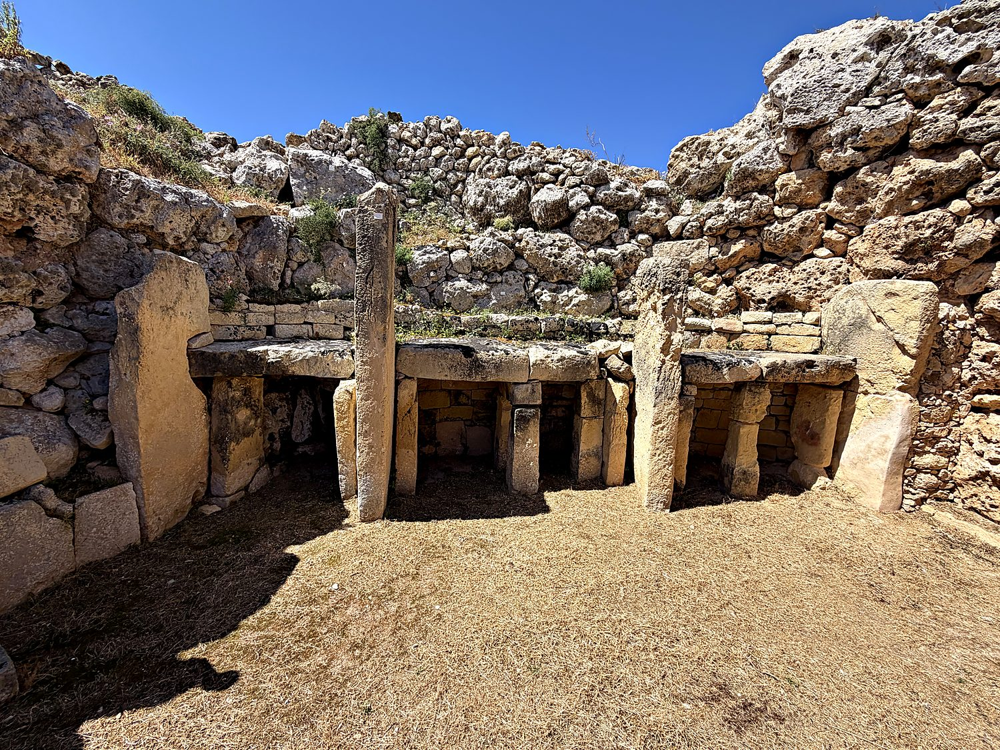
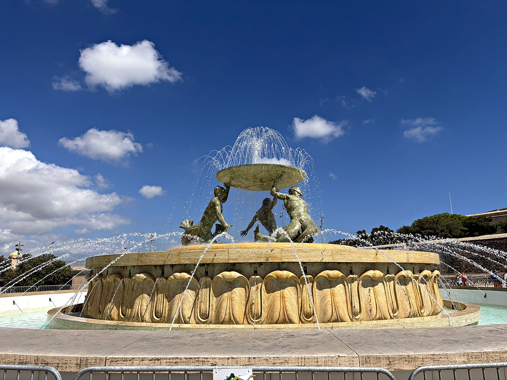

I visited Malta in May 2026, traveling with my dad across this compact but astonishingly dense little archipelago in the middle of the Mediterranean, roughly halfway between Sicily and North Africa. For such a tiny country (you can drive the length of the main island in under an hour) Malta punches absurdly above its weight. It holds some of the oldest freestanding structures on Earth, played an outsized role in World War II, and is stuffed with more Baroque churches per square mile than just about anywhere. We packed in an almost comical amount, from prehistoric temples to wartime bunkers to gilded cathedrals, hopping buses and ferries between the main island and its quieter sister Gozo. One running joke of the trip was just how many people running the country, from bus drivers to hotel managers to restaurant staff, turned out to be from the Indian subcontinent. This served as a good reminder of how globalized even the smallest nations have become, particularly when cheap foreign labor is involved.
Our base was around the harbor city of Valletta, Malta's diminutive capital and one of the most concentrated historic cities in the world. Valletta is a fortified peninsula of honey-colored limestone laid out on a grid by the Knights of St. John in the 16th century, and today the whole city is a UNESCO World Heritage Site. We wandered its steep streets past the Triton Fountain, the Upper Barrakka Gardens with their sweeping harbor views, and delved into the excellent war museums that tell the story of Malta's astonishing endurance under siege. Then we took the early ferry across to Gozo, the greener, sleepier second island, where we explored the walled citadel of Victoria, the dramatic coastline, and yet more remarkable ancient sites. Everywhere we went, the islands' signature architecture followed us: flat limestone facades, ornate church domes on every horizon, and enclosed wooden balconies that jut from nearly every building.

Malta's history is almost unfathomably deep. Its megalithic temples like Ġgantija, Ħaġar Qim, and Mnajdra were raised more than 5,500 years ago, making them older than Stonehenge or the Egyptian pyramids and among the oldest freestanding buildings anywhere on the planet. Thanks to its position squarely in the middle of the Mediterranean, the islands were coveted and occupied by a procession of civilizations. Phoenicians, Carthaginians, Romans, Arabs, and Normans each left their mark on the island and on the Maltese language, which is a unique tongue descended from Arabic but written in the Latin alphabet and laced with Italian and English.

In 1530 the islands were handed to the Knights Hospitaller (aka the Knights of St. John) who transformed Malta into a bastion of Christendom and, in the epic Great Siege of 1565, famously repelled a massive Ottoman invasion. The Knights ruled for over two centuries, endowing Malta with its magnificent Baroque architecture, before Napoleon ousted them in 1798. The Maltese sought help from the UK, which kicked out the French soon after and took control of the island. Malta's most heroic modern chapter came in World War II, when the strategically vital island endured one of the most intense sustained bombing campaigns in history while serving as an unsinkable Allied base. King George VI awarded the George Cross to the entire population to commemorate their collective bravery, an honor still emblazoned on the national flag. Malta gained independence from Britain in 1964 and today, as one of the smallest members of the European Union, remains a proud, densely packed, and deeply historic little nation.
From the plain, almost austere limestone exterior of St. John's Co-Cathedral in Valletta, nothing prepares you for what waits inside. Built by the Knights of St. John between 1573 and 1578, its interior is one of the most spectacular expressions of high Baroque anywhere, with virtually every surface covered in gold. The floor is an unbroken carpet of some 400 inlaid marble tombstones marking the graves of the Knights, and the oratory houses Caravaggio's enormous masterpiece, The Beheading of Saint John the Baptist, the only work the painter ever signed. My dad and I both remarked that it had the gilded excess of something in the Vatican. Even though it is not usually my personal aesthetic, the sheer craftsmanship and ambition of it are undeniable, and it stands as the crowning glory of the Knights' rule over the island.

Scattered across Malta and Gozo are the islands' most mind-bending treasures: a series of megalithic temples that rank among the oldest freestanding stone structures on Earth. We visited several, including the immense Ġgantija temples on Gozo. These two structures within one compound derive their name from the Maltese word for "giant," because locals could not believe mere humans had raised its megaliths, some of which stand over five meters tall and weigh many tons. Built between roughly 3600 and 3200 BC, more than a thousand years before the pyramids, these temples were aligned to the solstices and used for rituals we still only partly understand. Standing among the massive, weathered stones, it is genuinely humbling to think that Neolithic islanders quarried, moved, and assembled these blocks with no metal tools or wheels.

Guarding the entrance to Valletta, just outside the city gate, stands the Triton Fountain. Sculpted in the 1950s, it consists of three muscular bronze sea gods hoisting a great basin above a jet of water, and is now one of the capital's most recognizable landmarks. It makes a fitting gateway to a city that is essentially a continuous open-air museum. Behind it, Valletta unfolds as a grid of narrow limestone streets rising and falling over the peninsula, opening suddenly onto grand squares, hidden gardens, and dizzying viewpoints over the Grand Harbour. For a capital you can cross on foot in fifteen minutes, it holds an extraordinary density of beauty and history.
